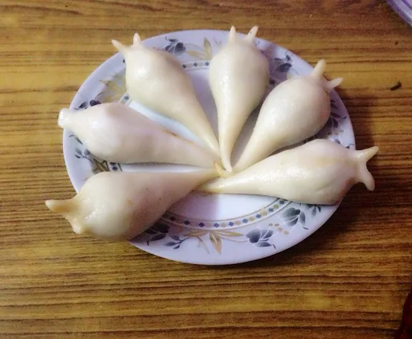

Yomari Recipe

Description
Yomari- “Ya” means “to like” and “Mari” means “Delicacy or bread”
Ingredients
- 400 gm Rice flour
- 50 gm Wheat flour
- 200 gm Chaku (Molasses)
- ½ cup Roasted Sesame seeds (ground)
- ½ cup Roasted Cashew nut or peanuts (ground)
- ½ cup Coconut (grated)
- Vegetable oil
Steps
- Break the Chaku (molasses) to small pieces, so that it can be evenly cooked. In a saucepan, put the Chaku and pour a cup of hot water. Heat the pan until Chaku completely melts in water. Add crushed sesame seed, cashew nuts, coconut and a tablespoon of rice flour. Cook in low heat with continuous stirring until the paste becomes gooey (honey consistency).
- In a bowl, take rice flour and wheat flour, mix them together and add around one and half cup of lukewarm water. Mix it together using your hand or food processer. Dough should be very soft but not runny. Add some water if it’s hard and some more rice floor if it’s runny.
- Then oil your hand with vegetable oil to make sure that dough doesn’t stick to your hand. Take a small portion of dough in your hand; start making the shape of Yomari and cavity for fillings with your index finger. Fill the Yomari with the fillings. Check out this video for making the Yomari.
- Steam Yomari in a momo steamer for around 10-15 mins. Sweet and fluffy Yomari is ready. Eat it when it is hot. I love the bitter sweetness of Chaku and nuttiness of roasted sesame seed and cashew nuts.
All Recipes